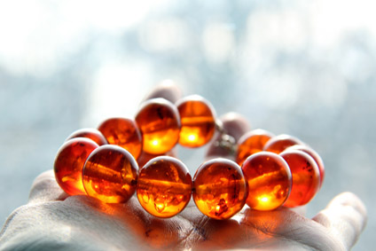

7 Easy Tests To Identify Real Amber
It is unfortunate that we cannot simply trust suppliers to provide the product that they claim that they are selling, but often we can’t. When purchasing items over the Internet, buyers need to be especially wary of claims of authenticity since the images on a website provide no validation of what a product is made of. Even when you have the product in hand, unless you are very familiar with the real thing, false products can be passed off as true Baltic amber.
To be sure that the product you have purchased is truly Baltic amber and will contain the healing properties of succinic acid that you are seeking, you may want to test the amber beads. There are several methods used to authenticate true amber. We’ve listed them below.
Visual Inspection
To distinguish real amber beads from plastic or glass beads of an amber color, look for natural imperfections. Amber may have tiny air bubbles or cracks in it. The beads also should not all be perfectly round or of the same size. Amber also will feel warm to the touch, instead of having the chill of glass.
Saltwater Test
Amber is very lightweight and will not have the weight of a glass bead or even that of a solid plastic bead. To test this property of Baltic Amber, create saltwater by mixing together one part salt with two parts water. True amber beads should float in the saltwater, while glass or plastic beads sink.
Black Light Test
This test is actually kind of fun. You will need some form of ultra-violet (UV) light, commonly known as a black light. Using a UV flashlight is the easiest. If your amber beads are true Baltic Amber and not Copal, they should create a fluorescent glow from the black light. Depending on the color of your amber beads, the fluorescent glow could be anywhere from a yellow-green to a bluish hue.
The Static Test
Simply rubbing the bead between two layers of soft cloth should create a static charge in the bead, similar to rubbing a balloon on your hair, if it is true Baltic amber. The static should be able to attract a light piece of paper to it. If the bead is made of lower grade Copal, the bead will not develop a static charge and may instead become sticky.
Other Means of Testing for Real Amber Beads
Scratch Test
This test can distinguish amber from colored glass. If you don’t mind the potential of damaging one of the beads by scratching it, you could try this test. Try scratching the bead with something metal. True amber is soft enough to be scratched by metal where a glass bead would not be scratched by metal.
Scent Test
Amber has a strong tree scent since it is formed from fossilized tree resin. The smell may sometimes be detected upon immediately opening a sealed bag of raw Baltic Amber beads, but not always. The scent test is usually performed by heating a bead. Once you’ve become familiar with the smell of amber, it is fairly easy to detect, but detecting the difference between the fresh pine scent of lesser quality Copal and the stronger scent of Baltic Amber can be a bit tricky to a newcomer. If your amber colored bead melts when heated, then you’ll probably smell a melted plastic odor instead. THIS is a definite indication of a fake!
Acetone Test
When attempting to distinguish true Baltic Amber from other resins like Copal or from plastics, the acetone test is pretty accurate. A few drops of acetone on true amber will not affect or harm the bead at all, but plastics, copal or other synthetic resins will likely turn sticky from the acetone.
As you can see, there are several ways to test the authenticity of your amber beads, though some can be a bit destructive in the process. Should you determine that the beads are fake, you may find it difficult to get a refund on your money from a provider that has not been truthful in their representation prior to the sale. Purchasing your Baltic Amber teething jewelry from a reputable dealer with a strong, trustworthy background remains the best way to protect yourself from being taken advantage of when buying amber beads.